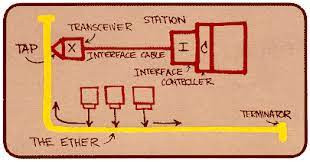

Robert Metcalfe (1946-)
His life
Robert Melancton Metcalfe was born on April 7, 1946 in Brooklyn, New York. His father dealt with technical things, namely he was a testing technician and specialized in measuring and testing gyroscopes. She became the secretary of Bay Shore High School, where Metcalfe also graduated in 1964. From there, Robert's life path led to the Massachusetts Institute of Technology (MIT), where he graduated in 1969 and obtained two BSc degrees, one in electrical engineering and the other in industrial management at the MIT Sloan School of Management. He continued his studies at Harvard University, where he obtained an MSc in applied mathematics in 1970, and a PhD in computer science in 1973.
Harvard
In addition to his studies, Metcalfe was also forced to look for financial sources, because by the time he applied to Harvard, he had exhausted the NSF (National Science Foundation) grant and had to find something to finance his studies. Since the remuneration for the work undertaken there was fixed at Harvard - 2 dollars per hour - he instead contacted his former acquaintances at MIT, where they offered him the choice of whether to go into computer memory development or network development. By 1972, however, Metcalfe's network adapter card was ready at MIT and he also submitted his PhD theses at Harvard. That's when another cold shower hit: the professors at Harvard did not accept the theses based on the work done at MIT, and the achievement of the PhD seemed to slip away. In addition, the situation was complicated by the fact that in the meantime he got a job at the Xerox Palo Alto Research Center, Xerox PARC, so it seemed that he would no longer have a way to find new theses for his PhD either.
3-COM
Metcalfe left Xerox PARC in 1979 and co-founded 3Com with Howard Charney in Metcalfe's Palo Alto apartment. Perhaps only a few people remember it, but the name 3Com was created as an abbreviation for "Computer Communication Compatibility". The focus of the company was, of course, the construction of Ethernet and computer networks. Metcalfe left the successful and considerably grown company in 1990, after a fight on the board of directors, the Board elected Eric Benhamou as the successor of Bill Krause as the president and CEO of 3Com against Metcalfe.
His disappearance, his awards
After that, Metcalfe almost disappeared for ten years, making a living almost only in publishing and not very successful predictions, then he emerged as a venture capital investor from 2001 and continued his activities as a general partner of Polaris Venture Partners. In 2010, Metcalfe was selected as the Head of Innovation Initiatives by the Cockrell School of Engineering at the University of Texas at Austin. He has been active here since January 2011. On March 14, 2003, Robert Metcalfe received the National Medal of Technology from President Bush at the White House, among many other awards. And in May 2007, he was inducted into the National Inventors Hall of Fame in Akron, Ohio for his pioneering work in Ethernet technology.